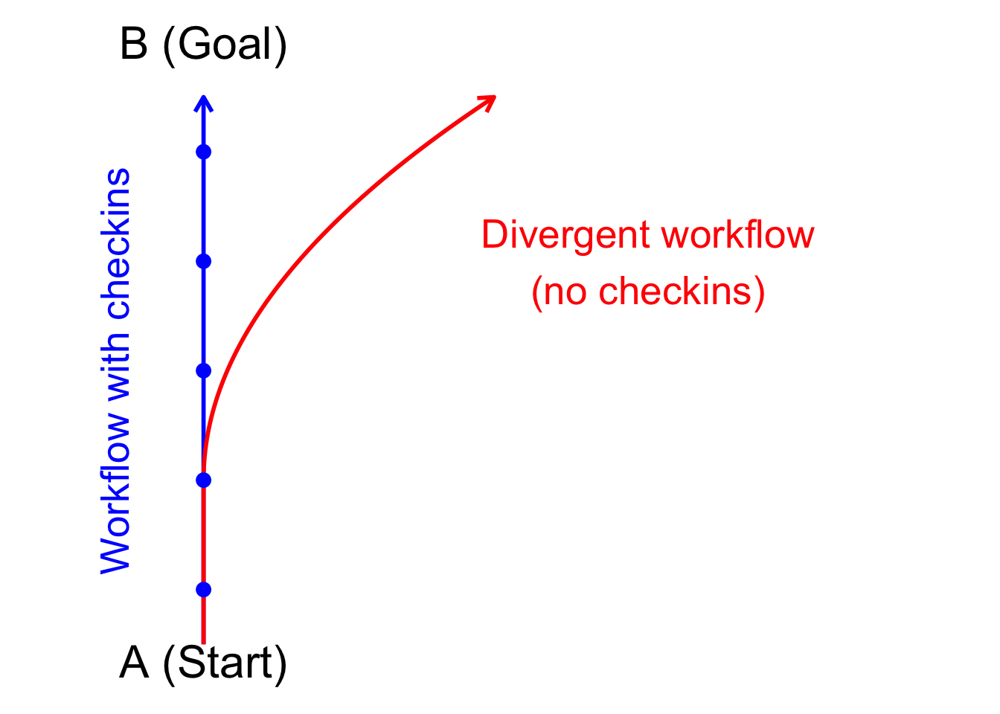
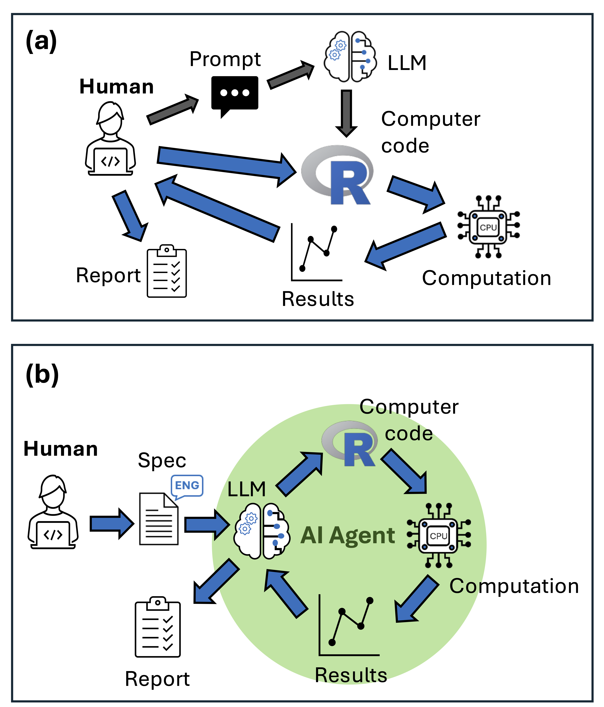

8 Advanced LLM agents
There are many LLM agent software programs available and more emerging all the time. Here I’ll cover a couple. Agents run tools in a loop. This means they can autonomously complete a task that you set up for them.
Here’s a comparison for how a statistical workflow might look if using inline code editing and Edit features with github copilot, versuss using an agent.

The default for most agents is to request permission before running tools. This is safer because there are security concerns (they can write and run code) and they can also make mistakes. So you might want to review each decision the agent proposes (at they work very fast, so you will be the bottleneck in the process).
My current workflow is to use a mix of Github Copilot’s editing features and agents (Roo Code or Github Copilot). I usually start a project with writing a detailed prompt, markdown file or readme file that explains what I want to do. Then I get the Agent to scaffold it and make a first attempt at the code.
You should keep your readme updated for continued agent use, to keep the agent on topic. If there’s out of date or inappropriate context in the readme (such as mentioning an R package you don’t want to use), you’ll find the agent defaults back to using the wrong tools.
Then it’s often a process of iteration. Don’t be afraid to delete everything an Agent has done and start again. I often find for R that it implements overally complex code. So I’m often starting again with clearer commands for how to write the R code.
You can also just accept every suggestion without reading it, also called ‘vibe coding’. However, I don’t recommend doing that, especially when you are starting out. You need to get a feel of how much direction it needs and problems it might create. Without human intervention the algorithms have a tendency to go off task:
8.1 Software options
We’ve already seen the Github Copilot interactive agent. Below we’ll look at two other options: Roo Code and Github Copilot CLI (which can be run programmatically).
There are also a number of agents available that run in R. I haven’t mentioned them here (yet) as they are very early stage. But check out this resource for an up-to-date overview.
8.1.1 Roo code
Roo Code is an LLM agent that you can run from a VSCode or Positron extension. I like this one because of its customization options, such as allowing you to create your own modes and fully modify the system prompt.
You ‘BYOK’ (‘bring your own key’) with Roo Code, meaning you provide the API key for LLM access. It then uses that key to make requests on your behalf.
Roo code is more complex and expensive to use than Copilot (you are paying per token and it uses a lot of tokens), but allows significant amounts of customization to make bespoke agents that can help with the scientific process.
Some of the customization options include:
- API access
- Model options
- Customizing system message
- Context window management
- Cost
- Vision capabilities
8.2 Github Copilot CLI
Github Copilot CLI (Command Line Interface) recently became available. It is an AI agent, meaning it can use tools autonomously in a loop.
The advantages of this one over Roo Code are a monthly subscription fee rather than API fees (note its not available in free copilot licenses) and ability to run it programmatically. Downsides are that it is not as customizable.
It has two modes:
An interactive mode that is like a terminal version of the Copilot agent that runs in the chat window
A programmatic mode that can be run with shell scripts.
The Copilot CLI is available with paid versions of github copilot.
The programmatic mode allows you to write scripts that call github copilot agents. This means you could run replicate agents on the same problem, then gather there results for analysis.
Once you’ve setup the copilot CLI, its very easy to run it from R:
copilot_cmd <- "copilot -p 'Set-up this project directory with a readme.md file, and directories for outputs, scripts, plots.' --allow-all-tools"
system(copilot_cmd)
This will run the agent autonomously in the current working directory of your R session.
Now I wouldn’t recommend using --allow-all-tools like this however. There are important security considerations. Like prompt injection attacks where an Agent goes on the web and gets tricked into doing something bad to your computer when it reads some malicious content. Likewise, agents can just stuff up and just delete or overwrite a bunch of files you wanted to keep.
You do need to allow some tools however, otherwise you might as well run the agent in interactive mode (because you’ll have to manually approve every tool use). This defeats the time-saving goal of running agents in a loop.
Here’s my current set-up:
copilot -p 'A prompt here' --allow-all-tools --deny-tool 'shell(cd)' --deny-tool 'shell(git)' --deny-tool 'shell(pwd)' --deny-tool 'fetch' --deny-tool 'extensions' --deny-tool 'websearch' --deny-tool 'githubRepo'"
I allow all tools, then prevent tools related to changing working directory, accessing the web or viewing directory context.
There is still some risk here. e.g., if you want it to run Rscripts you might want to include in your prompt something like ‘Use Rscript my-script.R to run R scripts from the terminal.’ The R scripts could include anything (including connecting to the web).
Here’s an example in action. I use sprintf to format the terminal command with the prompt, tools and sub-directory path.
copilot_prompt <- "Set-up this project directory with a readme.md file, and directories for outputs, scripts, plots. Then create example data to illustrate a poisson GLM. Make prediction plots. Use `Rscript 'my-script.R'` to run R files. "
copilot_tools <- "--allow-all-tools --deny-tool 'shell(cd)' --deny-tool 'shell(git)' --deny-tool 'shell(pwd)' --deny-tool 'fetch' --deny-tool 'extensions' --deny-tool 'websearch' --deny-tool 'githubRepo'"
subdir_path <- "dir1"
copilot_cmd <- sprintf(
"cd '%s' && copilot -p '%s' %s",
subdir_path,
copilot_prompt,
copilot_tools
)
system(copilot_cmd)
From here it would be easy to create a loop over different subdirectory paths, and run a separate agent in each one. The advantage of cding into each path before the agent opens is that the agent can’t then see context from other sub-directories. So you get independent agent runs.
You could use this to see how different prompts perform, or do complex prompt strategies like ‘tree of thought’. In tree of thought you ask an agent to create the same thing many times, it will do it slightly differently each time. Then you aggregate the results and pick the most common or most accurate one.
My one gripe is that Github have provided us with woeful documentation of what the tool names are. I’m guessing the tools are what you can see if you open the chat window, click ‘Agent’ mode, then click the tool symbol.
I’d love to have some default tool sets that simplify the tool permissions. For instance a tool set that locks down all web access.